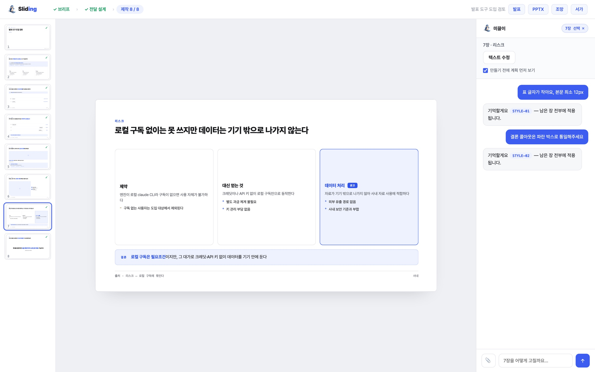
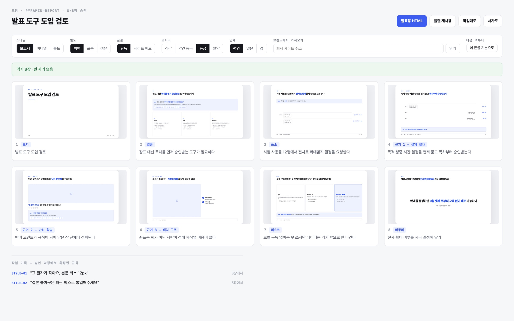

Sliding
Sliding
Sliding
Sliding
수제작 품질 그대로, 대화로 만드는 발표. 질문 네 개로 시작해 전달 방법을 설계하고, 한 장씩 보면서 승인합니다. 로컬 Claude 구독으로 돌고, 크레딧이 없습니다.

좋은 발표는 장표가 아니라 전달 설계에서 나옵니다. Sliding 은 자료를 요약해 슬라이드로 바꾸는 도구가 아니라, 발표 컨설턴트처럼 묻고 설계한 뒤에 한 장씩 만들어 보여주는 스튜디오입니다.
무엇을, 누구에게, 몇 분, 어떤 결정. 참고 자료가 있으면 붙여넣으면 됩니다 — 모든 주장·수치는 자료의 §근거로 추적됩니다.
피라미드 보고 · 강의 · 피치 등 전달 방법론을 근거와 함께 고르고, 장마다 역할이 붙은 목차를 제안합니다. 목차 승인 전에는 장표를 만들지 않습니다.
장마다 보고 승인하거나 말로 고칩니다. AI 는 앞 장들의 맥락을 이어받아 다음 장을 만듭니다 — 전체 재생성이 없어 토큰 낭비도 없습니다.
목표는 사람 눈 10점. 장마다 세 겹의 눈이 승인 전에 돌고, 자동 수정은 항상 이전보다 나빠지지 않을 때만 반영됩니다(keep-not-worse). 위반은 리포트가 아니라 재생성 지시로 되돌아갑니다.
| 층 | 잡는 것 | 방식 |
|---|---|---|
| 계약 린트 | 캔버스·토큰·금칙 3계약 위반, 깨진 한글, 조각 줄 | 결정적 정적 검사, 즉시 |
| 렌더 실측 | 잘림 · 요소 겹침 · 낱글자 조판 · 대비 미달 | 브라우저 레이아웃 엔진을 계측기로 |
| 비전 채점 | 기하로 못 잡는 어색함 — 구도 · 밀도 · 위계 | 렌더 캡처를 AI 가 10점 룰브릭으로 채점 |
